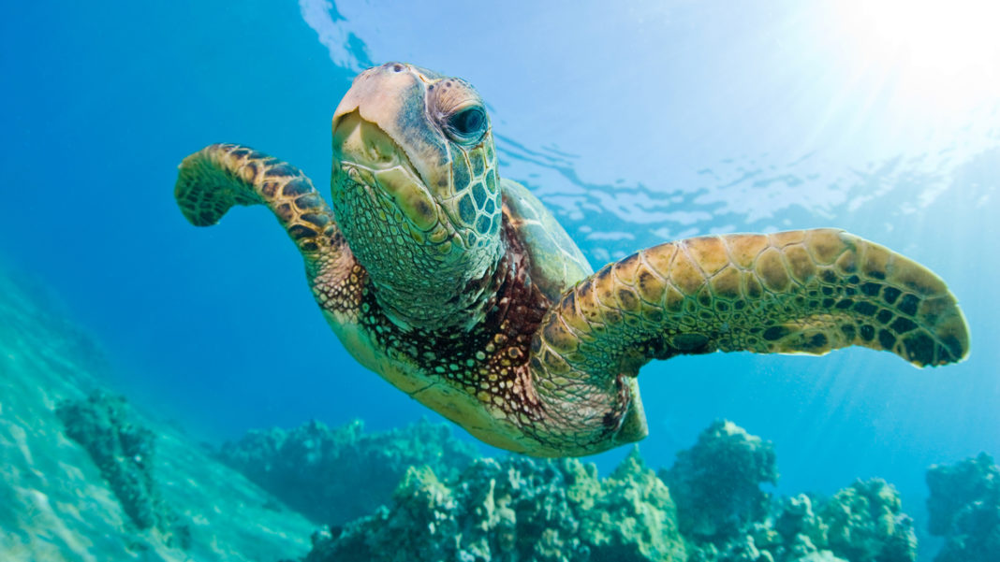

Os animais aquáticos são todos aqueles que podem viver na água graças a diversas adaptações que os permitem desenvolver-se neste meio. Neste ponto é importante ressaltar que, quando falamos de animais aquáticos, nos referimos à um grupo de indivíduos que precisam da água como habitat para sobreviver, alguns deles não são capazes de respirar fora dela e outros, ao contrário, sim, mas ainda assim precisam do meio aquático para sobreviver.
Por outro lado, os animais aquáticos podem viver em água salgada ou doce, e somente pouquíssimas espécies estão adaptadas para passar de um tipo de ecossistema a outro sem que isso lhes cause problemas, já que, por exemplo, um animal que vive em água doce não tem as adaptações necessárias para viver em água salgada. Outros animais toleram certos traços de concentrações salinas, enquanto que alguns podem estar em águas super salgadas.
Os golfinhos são animais encontrados no ambiente aquático, existindo espécies marinhas e também de água doce. Por viverem em ambiente aquático, apresentam características que permitem sua sobrevivência nesse ambiente, como corpo com formato hidrodinâmico, membros anteriores em forma de remo e membros posteriores vestigiais. Possuem uma espessa camada de gordura subcutânea e quase não têm pelos. Em algumas espécies, a boca é alongada para a frente, formando uma espécie de bico longo.
São animais que apresentam respiração pulmonar, sendo, fundamental, portanto, que eles subam até a superfície para conseguir capturar oxigênio. Os golfinhos possuem um orifício respiratório localizado na região no alto do crânio que funciona como uma válvula, abrindo quando ele chega à superfície e fechando quando ele submerge. Os golfinhos têm sistema respiratório e circulatório adaptados a suportar longos períodos embaixo da água.
Os golfinhos são animais carnívoros, alimentando-se, por exemplo, de peixes e cefalópodes. Algumas espécies, como a orca, são capazes de se alimentar de mamíferos como focas e pinguins.
Existem várias formas de classificar os animais aquáticos. Uma delas é o que vimos anteriormente, em função do tempo que passam dentro da água. Mas a classificação mais comum e difundida é a que separa em vertebrados e invertebrados.
Você sabia que nem todos os animais aquáticos vivem só dentro da água? Apesar de precisarem de um meio aquático pra viver — seja natural, como um rio, cachoeira ou mar, ou um que reproduza seu habitat, como um aquário — os animais dessa espécie vão muito além disso.
Nem todo animal aquático passa o tempo todo dentro da água. Algumas aves e mamíferos, por exemplo, possuem a capacidade de transitar muito bem entre a água e a terra.
Pato selvagem
Conhecido também como “pato do mato”, o pato selvagem é um antigo nativo brasileiro. Quando imaginamos essa ave, pensamos em um animal branco de bico amarelo, não é? Mas esse não é o caso. Vivendo preferencialmente em bando, os patos selvagens são escuros, de penugem é preta (quando são domesticados, esta pode variar entre branca e azul).
É comum em todo território brasileiro, sendo sua criação doméstico mais comum no norte, na região da Amazônia, já que essa população vive à beira de rios e lagos. Não costumam produzir sons altos, podem voar e pousar no chão e na água. Os machos têm quase o dobro do tamanho das fêmeas, por isso, é bem fácil distingui-los.
Apesar do nome “pato selvagem”, eles foram domesticados há muito tempo pelos indígenas, antes mesmo da colonização. A alimentação desses bichinhos envolve basicamente plantas aquáticas, anfíbios, crustáceos, sementes e pequenos répteis e insetos.
Tubarão-martelo
Com sua cabeça grande e chata, sua boca pequena e olhos nas extremidades, o tubarão-martelo pode ser encontrado nos mares tropicais e temperados. Sua cabeça, que é muito semelhante a um martelo, é seu grande triunfo. Esse formato proporciona uma capacidade de girar com muita agilidade e deixa o nado mais rápido.
O olfato do tubarão martelo é um sensor extremamente aguçado! Além de dar maior percepção para o tubarão, permitem que notem qualquer gota de sangue a 1 km de distância.
Cavalo-marinho
Como o próprio nome diz, o cavalo-marinho ganha esse nome por sua semelhança com o cavalo terrestre. Isso se dá pela sua estrutura, que conta com uma cutícula resistente que vai da cabeça até a cauda, trazendo essa aparência como se ele estivesse em pé, bem diferente das outras espécies aquáticas
Suas diferenças não param por aí: além de ficar em pé, o cavalo-marinho é o camaleão dos mares. Ele tem a habilidade de mudar de cor e o faz principalmente quando se sente em perigo. Seus olhos também são curiosos e eles não precisam olhar para o mesmo lugar — muito pelo contrário, se movem de maneira independente.
Eles podem chegar a medir até 15 cm e vivem nos corais marinhos, de onde saem apenas para se alimentar. Mesmo assim, não saem sozinhos, indo com seus parceiros. São monogâmicos, ou seja, costumam passar a vida toda com esse mesmo companheiro.
Quando se reproduzem, não são as fêmeas que carregam os filhotinhos, mas os machos! Essa gravidez é chamada de “gravidez reversa”, e mesmo depois que os cavalos nascem, é responsabilidade do macho a alimentação e proteção deles.
Peixe-palhaço
Talvez você não conheça essa espécie por esse nome, mas por “Nemo”. O peixe-palhaço é um dos bichinhos mais famosos dos desenhos infantis. Sua cor laranja e a faixa branca vertical fazem com que esse peixinho tenha uma aparência única e seja lembrado até hoje por muitas pessoas.
A espécie tem o costume de viver em uma relação de protocooperação — quando duas espécies diferentes se juntam para terem vantagens — com as anêmonas que, por sua vez, são como primas das águas vivas. A diferença é que elas se alojam em corais e contam com tentáculos que produzem uma substância paralisante em suas presas.
Nesse caso, a relação funciona assim: os pequenos “nemos” têm uma fina cobertura de muco que não permite que sejam atacados por essas substâncias. Como geralmente eles têm 88 milímetros de tamanho e as anêmonas 10 cm, se escondem nelas e usam esses tentáculos paralisantes da anêmona como proteção contra possíveis predadores.
Em troca, os peixes-palhaços, apesar do tamanho, chamam muita atenção com a sua cor. Assim, eles atraem novas presas para as anêmonas. Eles vivem em grupo em anêmonas nas águas quentes e rasas do Oceano Pacífico, sendo as fêmeas maiores do que os machos.
Tartaruga-marinha

Um dos maiores répteis do mundo, a tartaruga-marinha vive em áreas tropicais e já foi muito ameaçada de extinção. Ela é classificadas em duas famílias: a Dermochelyidae e a Cheloniidae.
A Dermochelyidae, conhecida popularmente como tartaruga de couro, é uma das que desovam seus ovos nas praias brasileiras, principalmente do Espírito Santo, e podem chegar a pesar 900 kg!
Elas são seres migratórios que, quando chegam na fase de reprodução, por volta dos seus 25 anos, voltam para a praia onde nasceram e depositam seus ovos ali. Infelizmente, somente 0,1% dos seus filhotes chegam à vida adulta. Até lá, eles estão sujeitos a todo tipo de predadores, como caranguejos, aves e outros répteis. Quando chegam, porém, podem viver de 80 a 100 anos.
TUBARÃO
O tubarão é um animal vertebrado da classe dos Chondrichthyes, ou seja, ele é um peixe cartilaginoso, e da subclasse Elasmobranchii. Dentre as principais caraterísticas, podemos destacar a presença de um esqueleto cartilaginoso com deposição de cálcio e o fato de serem carnívoros, ocupando os níveis superiores das cadeias alimentares dos ambientes marinhos.
Os tubarões habitam os mais diversos ambientes oceânicos, desde a costa a grandes profundidades e diferentes temperaturas.
Os tubarões são animais que, geralmente, apresentam grande porte. Algumas espécies podem alcançar até 18 m de comprimento. Seu corpo é fusiforme, sua pele, áspera e resistente, é recoberta por escamas placoides, cujas formas e distribuição aumentam a eficiência da natação – fato que os auxilia na busca por suas presas.
Sistema sensorial: apresentam visão bem desenvolvida; olfato aguçado, podendo sentir determinados odores a grandes distâncias; presença de linhas laterais, que identificam mudanças de pressão da água, sendo importantes detectores de vibrações; ampolas de Lorenzine, que identificam campos elétricos gerados por contração muscular de outros animais.
Sistema reprodutor: a fecundação é interna, e o macho apresenta nas nadadeiras pélvicas estruturas denominadas de claspers, que são responsáveis pela cópula; podem ser ovíparos, ovovivíparos ou vivíparos. Em algumas espécies, pode ser observado o canibalismo entre os embriões.
Sistema digestório: apresentam uma boca ventral com dentes dispostos em fileiras, podendo ser substituídos durante a vida; apresentam uma capacidade de mobilidade do crânio (cinese craniana), que permite alimentarem-se de grandes presas; possuem uma válvula espiral no intestino, que aumenta a superfície de absorção de nutrientes.
Sistema circulatório: assim como os demais peixes, apresentam um coração com duas cavidades, um átrio e um ventrículo, e circulação fechada.
Sistema respiratório: apresentam respiração braquial e não apresentam bexiga natatória.
GOLFINHO
Os golfinhos são animais pertencentes à classe Mammalia, ordem Cetartiodactyla e subordem Cetacea. Os cetáceos podem ser agrupados em dois grupos viventes: Mysticeti e Odontoceti. No grupo dos Mysticeti, estão as baleias verdadeiras, que apresentam barbatanas córneas em formato de lâminas flexíveis em sua boca, em substituição aos dentes. No grupo dos Odontoceti estão os cetáceos com dentes, como os golfinhos. Recebem a denominação golfinhos os cetáceos pertencentes às famílias Delphinidae, Iniidae e Pontoporiidae.
Os golfinhos são animais encontrados no ambiente aquático, existindo espécies marinhas e também de água doce. Por viverem em ambiente aquático, apresentam características que permitem sua sobrevivência nesse ambiente, como corpo com formato hidrodinâmico, membros anteriores em forma de remo e membros posteriores vestigiais. Possuem uma espessa camada de gordura subcutânea e quase não têm pelos. Em algumas espécies, a boca é alongada para a frente, formando uma espécie de bico longo.
São animais que apresentam respiração pulmonar, sendo, fundamental, portanto, que eles subam até a superfície para conseguir capturar oxigênio. Os golfinhos possuem um orifício respiratório localizado na região no alto do crânio que funciona como uma válvula, abrindo quando ele chega à superfície e fechando quando ele submerge. Os golfinhos têm sistema respiratório e circulatório adaptados a suportar longos períodos embaixo da água.
Os golfinhos são animais carnívoros, alimentando-se, por exemplo, de peixes e cefalópodes. Algumas espécies, como a orca, são capazes de se alimentar de mamíferos como focas e pinguins.
BALEIA
As baleias são mamíferos marinhos que pertencem à ordem dos cetáceos e estão divididas em duas subordens, sendo que as Myscticeti possuem barbatanas e as Odontoceti possuem dentes.
Elas apresentam muitas características que são comuns entre sim, independente da espécie:
Possuem uma grossa camada de gordura que auxilia a manter a temperatura corporal e armazenar energia;
Seu esqueleto é semelhante ao de mamíferos terrestres de grande porte, como os elefantes;
Por não possuírem guelras, como os peixes, costumam vir até a superfície para respirar;
Se comunicam entre si a partir da emissão de sons característicos.
"O termo baleia é usado para referir-se, preferencialmente, aos animais da subordem Mysticeti, masalguns autores utilizam o termo também em referência a grandes mamíferos da subordem Odontoceti. Na subordem Mysticeti, temos o que chamamos de baleias-verdadeiras ou baleias-de-barbatana. Já na Odontoceti, temos os golfinhos e o que chamamos de baleias com dentes. Dentre as baleias-de-barbatana, destaca-se a baleia-azul, o maior animal que existe em nosso planeta. Já entre as baleias com dentes, temos o cachalote. É importante frisar que alguns autores não consideram indivíduos da subordem Odontoceti como baleias."